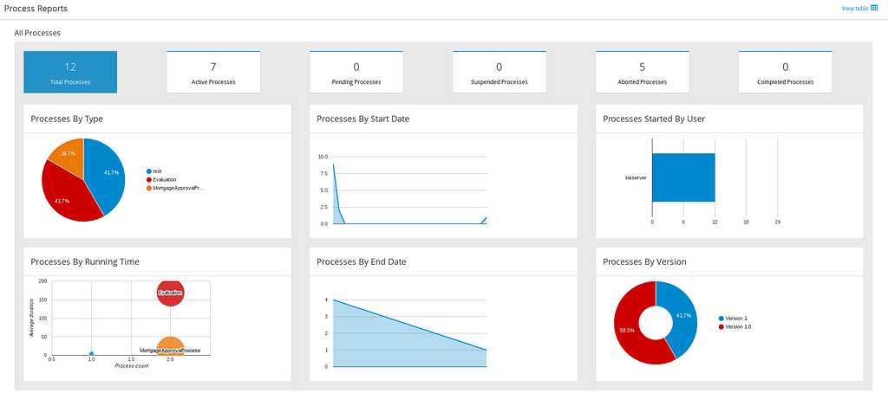
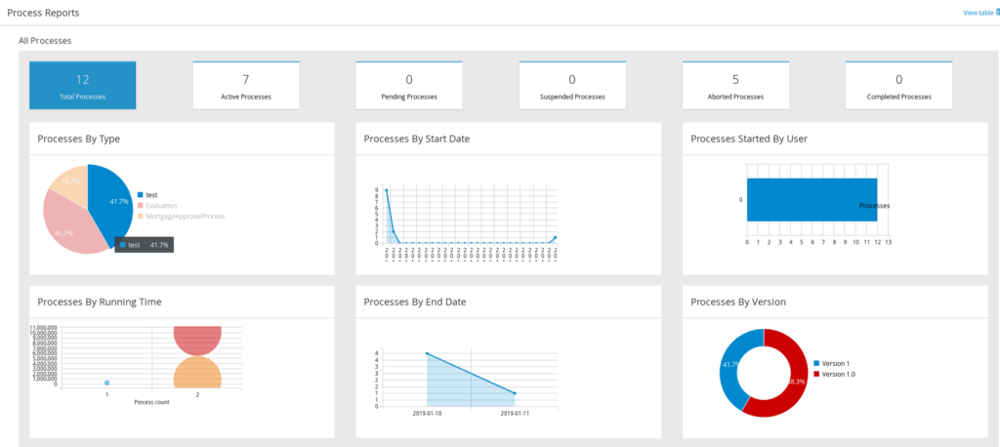

Business Central has a new Chart API
Business Central comes with standard dashboards aimed to show processes and tasks summaries. The API behind dashboards in Business Central is from Dashbuilder and it provides ways to display data using the concept of Displayers, for each chart our component type we have a displayer behind it. A displayer needs a renderer to do the actual data display, dashbuilder has the following renderers: Default Renderer (for tables and selectors), Google Charts, ChartsJS and Lienzo Charts and in Business Central only Google Charts is available.

In Business Central version 7.18.0 Final we added a new renderer based on C3 and D3 to Dashbuilder and also Business Central. It has a few advantages over Google Charts renderer:
- Can work with offline;
- It is faster and can quickly generate SVG charts;
- D3 is flexible and allow us to create new type of displayers;
- Patternfly version currently used by Business Central has CSS classes for C3 components, making it look alike Business Central layout and other components.
C3 is the new default renderer library and when starting Business Central and checking your dashboard you will see C3 charts.

You may be wondering what happened with Google Charts. Well, it is still available in Business Central 7.18, however, it will not be used by default. To switch back to Google Charts you can use the system property org.dashbuilder.renderer.default, which should have the ID of the renderer you want to use by default. The possible values for Business Central are gwtcharts or c3, so to switch back to google use the system property org.dashbuilder.renderer.default=gwtcharts. Google Charts will only be used temporarily for Maps displayer, but it is possible to exclude and even hide the Maps displayer using org.dashbuilder.renderer.offline boolean system property. A Maps implementation based on D3 will be available in next Business Central release. This is also true for Red Hat Process Automation Manager and Red Hat Decision Manager 7.3.
Finally notice that Google Charts is marked as deprecated, hence feel free to file issues and give feedback about C3 renderers. Use project APPFORMER and component Dashbuilder when creating C3 issues.
Let us know your thoughts about this change. What do you like more about C3 and what you will miss from Google Charts!